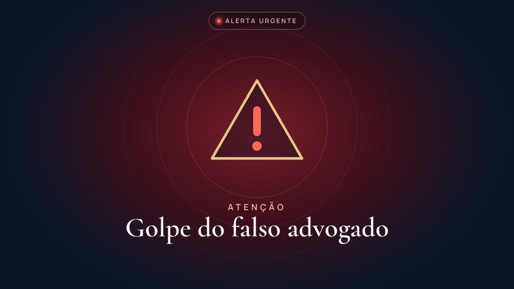

Artigos e notícias · Alerta ao cliente
Golpe do falso advogado: como funciona e como se proteger
Publicado em 19 de novembro de 2026 · Leitura de 5 min

Criminosos usam dados públicos de processos judiciais para se passar por advogados e pedir pagamentos via Pix, com a promessa de liberar valores da ação. Em regra, não existe pagamento antecipado para receber valores de um processo. Na dúvida, confirme com o seu advogado pelo contato que você já conhece, antes de pagar qualquer quantia.
Como o golpe funciona?
A maior parte dos processos judiciais é pública: o nome das partes, o número da ação e o nome do advogado podem ser consultados nos sites dos tribunais. Os golpistas usam essas informações para entrar em contato com a parte, quase sempre por WhatsApp, usando o nome, a foto e até o logotipo do advogado verdadeiro.
A mensagem costuma anunciar uma boa notícia: uma indenização, um alvará ou um precatório foi liberado. Para receber, a pessoa precisaria pagar antes uma "taxa", "custas" ou um "imposto", por Pix e com urgência. O valor vai para a conta do criminoso.
Quais são os sinais de alerta?
Número novo ou desconhecido, com a explicação de que "o advogado trocou de celular".
Pedido de pagamento para liberar dinheiro do processo, seja taxa, custas, imposto ou honorários antecipados.
Urgência: "o alvará vence hoje", "o valor volta para o tribunal se não pagar agora".
Conta em nome de outra pessoa ou de empresa desconhecida, diferente da que você já usava com o seu advogado.
Pedido de senhas, códigos ou fotos de documentos por mensagem.
Custas e tributos de um processo são pagos por guias oficiais, emitidas pelo próprio tribunal ou pelo órgão público, e não por Pix para pessoas físicas.
Como confirmar se é mesmo o seu advogado?
Ligue para o número que você já tinha antes da mensagem: o do contrato, do cartão ou do site do escritório. Não use o número que enviou o pedido.
A OAB mantém o ConfirmADV: você informa o número de inscrição na OAB, o estado e o e-mail que recebeu, e o advogado confirma em poucos minutos se o contato é dele. O Cadastro Nacional dos Advogados também permite conferir se a inscrição existe.
A OAB SP recomenda combinar com o advogado canais fixos de contato, um número e um e-mail salvos na agenda, e conferir os dados bancários antes de qualquer pagamento.
Caí no golpe. O que fazer?
Avise o banco imediatamente e peça a devolução do Pix pelo Mecanismo Especial de Devolução (MED), do Banco Central. Quanto mais rápido, maior a chance de bloquear o valor.
Registre um boletim de ocorrência, que em São Paulo pode ser feito pela Delegacia Eletrônica, e guarde prints das conversas, o número usado e os comprovantes.
Avise o seu advogado e denuncie o caso à OAB pelo canal de fiscalização.
Contatos oficiais deste escritório
Comunicado: o escritório Márcio Leme de Almeida não solicita pagamentos, depósitos ou transferências via Pix para a liberação de valores de processos, tampouco convoca clientes para audiências de urgência por videochamada. Em caso de dúvida, entre em contato exclusivamente pelo telefone oficial (15) 99191-8883.
Os únicos contatos do escritório são os informados neste site: WhatsApp e telefone (15) 99191-8883 e e-mail marcio.leme@adv.oabsp.org.br. Recebeu uma mensagem de outro número em nome do Dr. Márcio Leme de Almeida? Não pague e confirme antes pelo contato oficial.
Base legal
Código Penal, art. 171 (estelionato) e § 2º-A (fraude eletrônica, incluído pela Lei nº 14.155/2021). Orientações: Conselho Federal da OAB e OAB SP.
Conteúdo de caráter informativo, sem promessa de resultado, em conformidade com o Provimento nº 205/2021 do Conselho Federal da OAB.